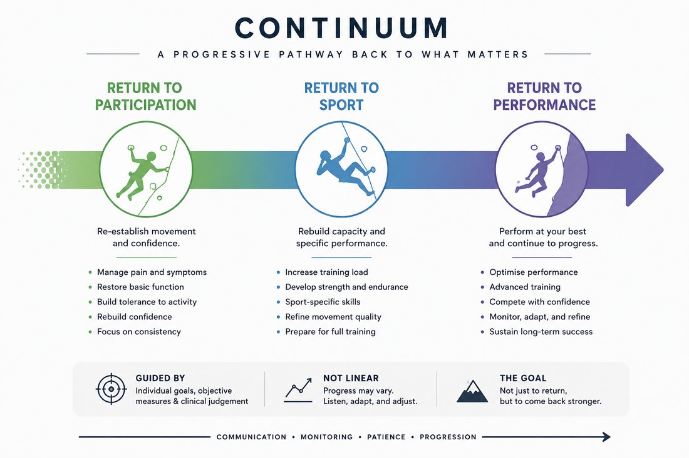
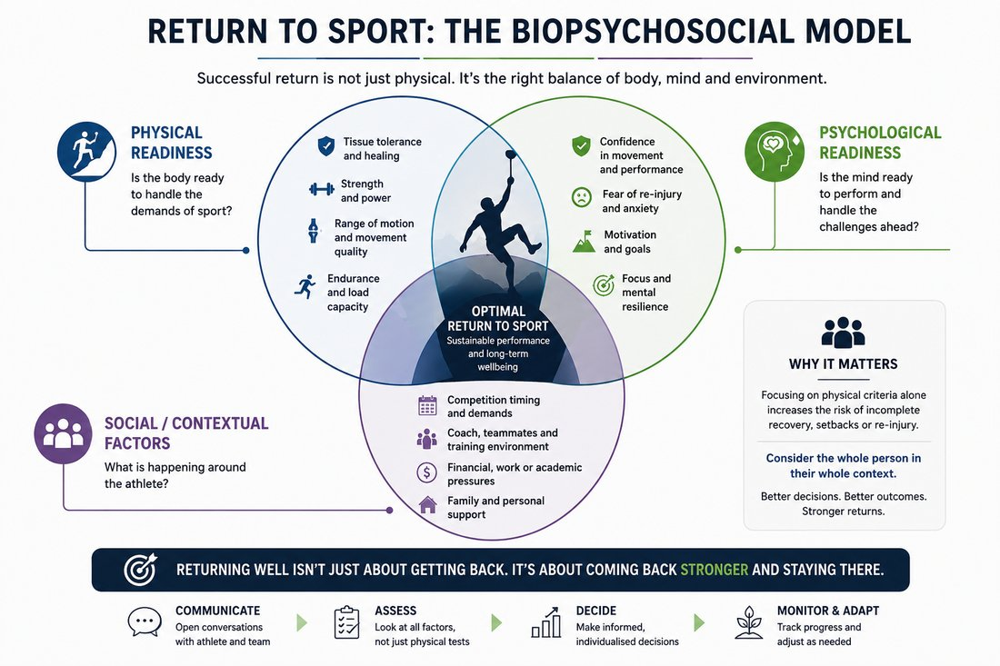

6.1 Purpose of This Module
Module 5 covered treatment and rehabilitation progressions for each climbing injury site. This final module addresses the decision that sits at the end of that process: when and how a climber returns to full training and climbing. It covers grading readiness by discipline, progressing load safely by volume, intensity, and grade, protective strategies during the return itself, working effectively with coaches, and monitoring for re-injury risk once a climber is back on the wall.
6.2 Return to Sport as a Continuum, Not a Single Decision
Return to sport is best understood as a continuum — return to participation, return to sport, and return to performance — rather than a single binary clearance decision made at the end of rehabilitation. This framing, established in general sports physiotherapy consensus guidance, treats return to sport as an exercise in risk management: weighing the risk of the activity against the demonstrated readiness of the tissue, the athlete, and the context they are returning to, rather than waiting for a fixed time period or complete symptom resolution.

A useful companion concept is the biopsychosocial model of return to sport: physical readiness (tissue tolerance, strength, range of motion), psychological readiness (confidence, fear of re-injury, motivation), and social/contextual factors (competition timing, coach and training environment, financial or personal pressure to return) all genuinely influence outcomes and are worth considering together rather than focusing on physical criteria alone.

6.3 Climbing-Specific Return-to-Sport Criteria
It is worth being direct about a limitation in the evidence base here: current evidence and validated return-to-climbing criteria remain sparse, and where criteria are used in practice they are often not clearly anchored to a climber's pre-injury or target climbing grade. A recent scoping review protocol addressing this gap proposes combining objective markers — finger strength, endurance, and climbing grade — with subjective markers — pain, confidence, and training tolerance — to build a more holistic picture of readiness.
In the absence of well-validated, climbing-specific return-to-sport tests, use a combination of site-specific physical criteria (from Module 5's rehabilitation goals), general sports-medicine return-to-sport principles (Section 6.2), and the climber's own subjective readiness — rather than relying on any single measure or a fixed timeline alone.
6.4 Grading Readiness by Climbing Discipline
Because the disciplines introduced in Module 1 place different demands on the body, readiness should be graded with the climber's primary discipline and grade of climbs (and any competition format) specifically in mind, rather than assuming a generic "fit to climb" threshold applies equally across contexts. And yet, returning to climbing in a different discipline or setting can prove useful for a graded return to climbing and can offer a therapeutic compromise.
| Discipline | Key Physical Demands to Restore | Readiness Considerations |
|---|---|---|
| Bouldering | Maximal single-move strength and power; controlled falling/landing ability. | Given its association with acute injury, confirm both tissue tolerance to peak load and confidence in falling/landing technique before full return. |
| Sport / Trad | Sustained submaximal endurance loading over longer routes. | Confirm the injured tissue tolerates repeated, prolonged loading, not just a single peak effort — relevant to overuse presentations in particular. |
| Competition (Speed/Lead/Boulder) | Format-specific demands as outlined in Module 1 — explosive repetition (Speed), sustained endurance under time pressure (Lead), maximal power (Boulder). | Confirm readiness against the specific format(s) the climber competes in, since training and competition load can differ substantially between formats even within the same athlete. |
6.5 Load Progression: Volume, Intensity, and Grade
Systematic review evidence in climbing populations has identified higher climbing grade, greater years of climbing experience, high chronic training loads, and lead climbing participation as potential risk factors for injury, alongside more recent evidence specifically implicating inadequate load management and training programming in overuse injury risk. These findings support a cautious, staged approach to reloading rather than a rapid return to pre-injury volume or grade.
- Progress session frequency and volume before intensity — re-establish a consistent, tolerated training pattern before reintroducing maximal effort, all with consistent monitoring of signs and symptoms.
- Reintroduce climbing grade gradually rather than immediately targeting the pre-injury project grade, particularly following an overuse presentation where high grade and high chronic load were plausible contributors to the original injury.
- Build in deliberate deload periods during the return phase, rather than only during illness or fatigue, to manage cumulative load across the weeks following return. Patients tend to respond well to understanding the underlying principles — spending time educating on the reasoning behind periodisation and deload intervals aids compliance.
- Where load-monitoring tools such as the acute:chronic workload ratio are used, treat them as one input among several rather than a precise predictive threshold — evidence for their reliability as a standalone injury-prediction tool is mixed across sports.
6.6 Taping & Protective Strategies During Return
The site-specific protective strategies established in Module 5 — pulley taping or ring splints during the crimp-reintroduction phase, wrist bracing for TFCC or hamate presentations, thumb spica taping for De Quervain's — should generally continue through the early return-to-climbing period rather than being withdrawn as soon as climbing resumes. Protective strategies and graded loading work together: taping does not replace the loading progression, but it reduces risk while capacity is still being rebuilt during real climbing activity, where load is less controllable than in a clinical or gym-based rehabilitation setting.
These strategies should be phased out slowly — begin by taping throughout a workout or session, then progress to taping only for the main session and warming up without taping, and finally to taping only for particularly hard moves.
6.7 Communicating with Coaches
Climbers returning to structured training are typically working with a coach who controls session content, volume, and intended grade progression — making the coach an essential part of a safe return, not a bystander to it. A few practical principles support this collaboration:
- Share the specific physical criteria the climber needs to meet (e.g. a pain-free full crimp hang at a given load, or a given number of controlled repetitions) rather than only a return date, so the coach can plan session content around genuine readiness markers.
- Be explicit about any grip types, movement patterns, or session intensities that should still be avoided or introduced gradually, since a coach without this detail may reasonably assume a discharged climber is fully unrestricted.
- Establish a simple feedback loop — even brief, periodic updates — so that load progression during the return phase is a shared, monitored process rather than something that reverts entirely to the coach's judgement once formal treatment ends.
6.8 Monitoring for Re-Injury Risk
Previous injury is one of the more consistently identified risk factors for subsequent injury across sports medicine generally, and climbing-specific research has similarly identified prior injury as a risk factor for re-injury in climbers. This makes ongoing monitoring after discharge — rather than treating return to climbing as the endpoint of care — a genuinely worthwhile practice, particularly in the months immediately following return when load is still being rebuilt.
- Continue a pain-monitoring approach (Module 5) into the return-to-climbing phase, with a clear, pre-agreed threshold for when the climber should reduce load or seek review.
- Schedule periodic follow-up — even brief check-ins — during the first few months back on the wall, rather than only responding if symptoms recur.
- Ask specifically about training volume and grade progression at follow-up, not only about pain, since load creep is often the first sign of a developing overuse presentation before pain appears.
Course Summary
Across these six modules, the course has moved from sport context (Module 1) through detailed climbing-specific anatomy and biomechanics (Module 2), the epidemiology and mechanisms of climbing injury (Module 3), site-by-site assessment (Module 4), evidence-based treatment and rehabilitation (Module 5), and finally the return-to-sport decision itself (Module 6). Together, this sequence is intended to give a physiotherapist with strong general clinical skills but no climbing background the specific knowledge needed to assess, treat, and safely return climbers to the sport — recognising, throughout, where the climbing-specific evidence base is well established and where it remains genuinely limited.
References
Return-to-Sport Frameworks (6.2–6.3)
Ardern CL, Glasgow P, Schneiders A, et al. 2016 Consensus Statement on Return to Sport from the First World Congress in Sports Physical Therapy, Bern. Br J Sports Med. 2016;50(14):853–864.
Ehiogu U, Wells G, Jones G, Buckthorpe M, Patterson S. Return to Climbing After Musculoskeletal Injury: A Scoping Review Protocol of Rehabilitation Content, Outcome Measures and Return to Sport Criteria in Climbers. BMJ Open Sport Exerc Med. 2026.
Load Progression & Risk Factors (6.5)
Woollings KY, McKay CD, Emery CA. Risk Factors for Injury in Sport Climbing and Bouldering: A Systematic Review of the Literature. Br J Sports Med. 2015;49(17):1094–1099.
Quarmby A, Zhang M, Geisler M, et al. Risk Factors and Injury Prevention Strategies for Overuse Injuries in Adult Climbers: A Systematic Review. Front Sports Act Living. 2023;5:1269870.
Re-Injury Risk (6.8)
Jones G, Llewellyn D, Johnson MI. Previous Injury as a Risk Factor for Reinjury in Rock Climbing: A Secondary Analysis of Data from a Retrospective Cross-Sectional Cohort Survey of Active Rock Climbers. BMJ Open Sport Exerc Med. 2015;1(1).
25 questions, 80% pass mark. Passing completes the course and issues your certificate.